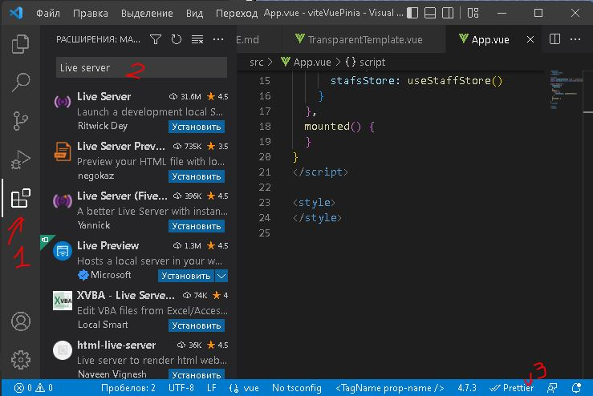
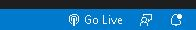
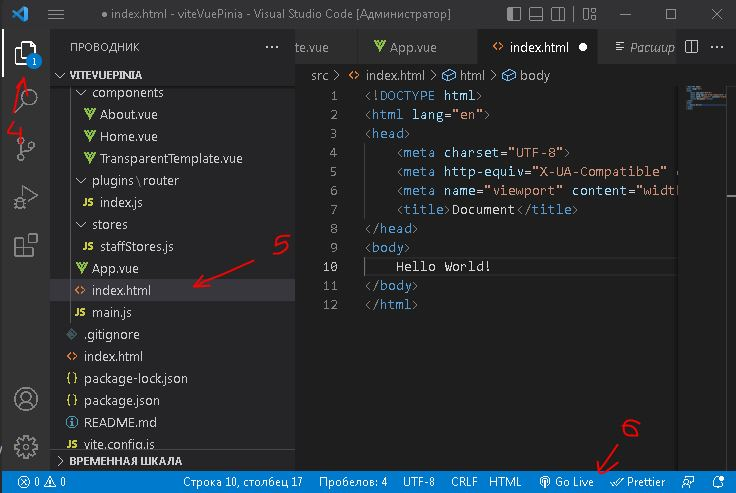

Чтобы увидеть изменения в браузере при каждом сохранении кода, ставим плагин

Нажимаем кнопку 1 и набираем текст в поле 2: Live Server

После установки внизу 3 появится кнопка Go Live

Теперь переходите 4, создайте index.html, сохраните.
Нажмите Go Live - откроется браузер.
Браузер будет обновляться и при каждом ctrl+S в редакторе.